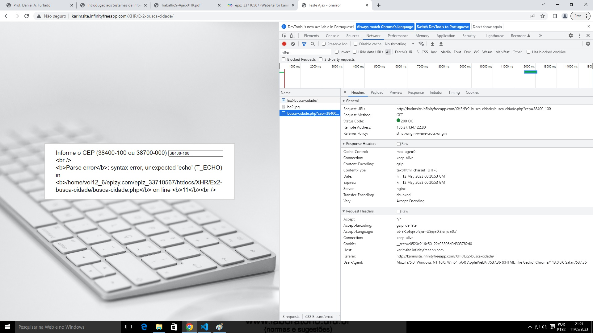

Retornou o código 200
A resposta foi uma mensagem de erro
Essa configuração é útil na hora de programar o site, para verificar possíveis erros
Essa configuração deve ser desligada ao disponibilizar o site para os usuários, pois ela facilitaria a invasão de um usuário maldoso
